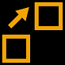
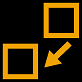
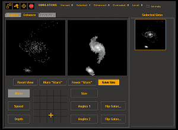

- Galaxy Zoo Mergers is a
 project
project
- ...just like


Data collection for Galaxy Zoo Mergers is closed.
Thank you again to all of our volunteers. Galaxy Zoo Mergers is now in an archive status. To see the final data release visit the data page here.
As of June 15, 2012, the primary data collection for Galaxy Zoo Mergers site has ended. You are welcome to continue using the site to explore mergers, but your data may not be included in future research. Thank you for your contributions.
There are two main ways to participate. One is by volunteering your time to run simulations and study the results in the Merge Galaxies activity. The other way is to review results submitted by other volunteers in Merger Wars. The Merge Galaxies activity requires the use of a Java Plug-In to run our simulation applet. The Merger Wars activity will work with any browser that supports javascript. The tutorial sections below provide more information about each activity.
Our volunteers have been doing a superb job of running simulations and evaluating the results. In just the first four weeks we've reviewed over one million simulations! Out of those million simulations, for around 30 different targets, our volunteers have selected about 15000 potential matches. Each volunteer performs an initial evaulation within their own set of results while using the simulation applet. Now we need to evaluate the set of all simulations submitted by our volunteers.
In order to determine the simulation parameters that make the best match, we are asking for additional assistance in perform a set of comparisons on the results. The Merger Wars activity will present a series of images generated from the simulation results submitted by people running the simulation applet. For each pair of images, you can compare it to the original target image. You have three choices, click on the left image if it is a better match to the target, the right image if it is better, or neither image if you think that neither is a good match. As soon as you click, you will be presented with a new pair of images. Images will "compete" with each other in a set of 8 images at a time. A single image can win up to three times within a given set of eight, so you will see some images more ofthen than others. After you've finished a competition for the 8 images, you can start on the next set of 8. We'll present 64 images of the same merger before switching to a new target.
The better image is the one that shows the proper number of tails in the proper orientation. If the image has tails but they are not quite in the right direction, you might still think it is the better of the two images. However, if the rotation direction of either galaxy is obviously the reverse of the target image, then it is not the better image. If neither is the better image, then please click on the button for neither at the bottom of the two images. For some mergers, you will be clicking the button for neither image for a larger portion of the images you review. That's not a problem. Every simulation result selected by our volunteers contains valuable information, even if it isn't a perfect match. The most import use of results that aren't the best match is in determining the uniqueness of the best-fit simulation parameters. So don't feel like results are being thrown away or ignored if you click on neither. We assure you, they are still being used.
While the main site has been fantastic at identifying colliding galaxies, to understand them we need to simulate them on a computer. That sounds like it should make for an automated process. The only problem is that the human eye is better than the computer at deciding when a simulation matches reality - so your task is to produce the simulation that best matches our target galaxy.
Clicking on 'More' will generate 8 random simulations; the computer guesses roughly what the results should look like, but the fine details are up to you. Click on any that you think are similar to the target in the centre; as you do this, they'll be added to your 'Selected sims' list on the right.
Don't be discouraged if you see few interesting simulations. By NOT clicking on the output, you are also generating valuable data as well. It's not enough for us to know which sims are the best match. We also need to know which ones don't make a good match at all. So simply watching the sims go by without clicking on the poor matches is still a very useful thing to do.
By the way, if you want to see the simulations while they're running click the 'Animate' checkbox and watch the galaxies collide the next time a simulation is run.
If you've found a simulation that is a pretty good match, you might want to improve it further. Click 'Enhance' to try your hand at adjusting the parameters that control the simulation by dragging the cross around the grey box at the bottom of the screen. You can choose any of your 'selected sims' to improve, but remember to save the results at the end.
Got lots of selected sims? Then tell us which ones we should pay attention to by using the 'Evaluate' tab in the Tournament mode. This mode is triggered automatically whenever you have 8 or more selected sims that need to be evaluated.
Periodically, as you accumulate evaluated results, the software will automatically save your results. This data will go into the database for further analysis. If you wish to stop before this auto-save, feel free to click the Stop sign button in the upper left.
Do you want to get started right now?
You can also continue on with the tutorial to learn more about how to use the simulation software.
For each merger being studied, the software will display a target image. You need to find the simulations that most closely match the target. Key ingredients for a match are relative sizes of the galaxies, existence and orientation of "tails", and apparent rotation direction.
Click the play button below to view a video introducing the mergers interface:
Below is a screen shot of what the applet looks like when it first starts. Along the top, starting on the left there are four buttons. The first is the pop-out/pop-in button, then the preferences button, next the target button, and finally the stop button. Next comes the session statistics and then finally the Animate option check box. In the center are the three tabs for Explore, Enhance, and Evaluate. On the right is the list of Selected Sims for your review.
  The pop-out button is available when the applet is running within the browser page that loaded it. Clicking pop-out will launch the applet into its own browser window that you can resize. At this point, the button becomes a pop-in button. This button will put the applet back into the original browser page.
The preferences button will activate the preferences dialog. Here the user can set the animation speed, number of simulation particles, and number of particles used to save simulations. The user can also specify whether they wish to see variable names or symbols used in the Enhance tab.
The target button will activate the target menu. This menu informs the user of the name of the current target merger. Here the user has the option of displaying a color image from SDSS or staying with the grayscale image for the target. If more than the current target is available for analysis, then the user will have the option of selecting a different target to analyze. Switching targets will end the analysis of the current target and send the current data back to the Merger Zoo server.
The Stop button is used to stop the session. It will save any evaluated results to the server. When the user clicks on it, they must decide if they are completely finished or whether they'd like to continue with this merger. If they chose to continue, then they may either reset all data and results, or keep going with the current set of results.
This tab will display a set of 8 randomly generated simulations. Pick on any that you feel are similar to the image in the center. The simulation won't be an exact match at this point, it may not even be that close at all. However, feel free to pick ones that have at least some "interesting" distortions.
Try to pick simulations that appear to be rotating in the same direction as the primary galaxy in the center image. Also, look for sims that have "tails" (or at least one big tail pointing to the smaller galaxy).
When you click on a simulation, it will be outlined in red and will be saved to your "Selected Sims" list on the right. You can review this list at any time to get an idea of what kind of simulations you've been selecting. To unselect a simulation, click on the image that is outlined in red, and it will be removed from the selected list.
 This screen allows you to design your own simulation. Pick one of the previous outputs saved in your Selected Sims list by clicking on it. Now it will be available for you to alter to your liking.
First, you have the option of viewing the simulation from different angles. Left click and hold down the mouse button on the simulation. When you drag the mouse, you will rotate the view. This will give you a full 3D picture of what is happening rather than the flat image. To undo any rotations, click on Reset View.
Next, you can re-run the simulation with more test particles by clicking on the More "Stars" button. This can enhance some of the fainter regions of the simulation output. However, it might also "wash out" other regions. To go back to a less crowded version, try clicking the fewer "stars" button.
You can alter the input values to the simulations by clicking on any of the pairs of parameters on the bottom. For example, clicking on M1 vs. M2 allows you to adjust the two mass values simultaneously. The vertical axis represents the first parameter, mass of the primary galaxy. The horizontal axis represents the second parameter, mass of the secondary galaxy. By left-clicking and dragging your mouse, you can alter these values. To change other simulation parameters, click on the label and then drag the cross-hairs cursor around. Each button has a tooltip describing the parameters. Simply mouse over them with your cursor to see their descriptions.
If you feel you've enhanced the original simulation and made it appear to be a closer match to the image now, click on Save Sim, and it will be added to the list of Selected Sims.
We are definitely appreciative of your efforts on the Explore and Enhance tabs. There is a lot of useful analysis that can be performed on your results so far. However, we're wondering if you have the patience to help us out a little bit more. We've prototyped an Evaluate tab. This tab allows you to provide a bit more information about the relative "fitness" of each of your Selected Sims.
As you accumulate simulation outputs in your Selected Sims list, the tool will periodically ask that you perform an evaluation on your results. The tool will switch to the appropriate tab. After you've finished that evaluation function, the Selected Sims will be sorted based upon your selections, with the "best" simulations near the top of the list. The tool will then switch you back automatically to either the Explore tab or the Enhance tab.
The Tournament mode is a simple "competition" where you pick the winners. Whenever there are 8 unevaluated simulations, you can have a playoff amongst them. Simply select the top 3 simulations in the set of 8. First click on the best one, then the next best, then the next. These winners will be promoted to the next level of the tournament. The losers will be eliminated. They will remain in the list of Selected Sims, but they won't be competing anymore. As you accumulate winners at each of the upper levels, there will be tournament rounds at those levels as well. You can conduct playoffs for as many levels as there is memory in your Java Browser Plugin.